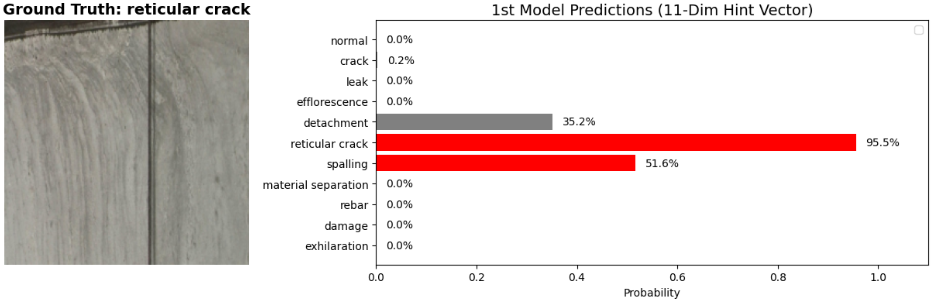
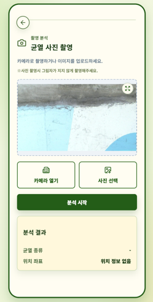

팀 리딩과 시스템 설계
프로젝트 기획, 일정 및 38개 WBS Task를 관리하고 Classification–Segmentation 모델과 서비스의 전체 연결 구조를 설계.
Crack Safety Analysis System
노후 시설물 이미지의 결함 종류를 분류하고 Pixel 단위 위치를 탐지하는 딥러닝 기반 안전 진단 서비스.
00 / OVERVIEW
Classification의 빠른 결함 판단과 Semantic Segmentation의 정밀한 위치 탐지를 결합했다. 단일 Label과 누락 Annotation이 공존하는 데이터의 한계를 모델 구조와 Loss 설계에 반영하고, 학습 모델을 컨테이너 기반 AI 서버로 연결했다.
01 / CONTRIBUTION
팀 운영과 연구 설계부터 학습·통합까지 순서대로 수행한 범위.
프로젝트 기획, 일정 및 38개 WBS Task를 관리하고 Classification–Segmentation 모델과 서비스의 전체 연결 구조를 설계.
AI Hub 시설물 결함 데이터 472,495장의 클래스 및 Label 분포를 분석하고, 과도한 균열 클래스에 Undersampling 적용.
EfficientNet 기반 분류기와 SegFormer를 학습하고, 11-class Logit을 Hint Vector로 전달하는 Cascade 구조 및 Custom Loss 구현.
AI 추론 결과를 서버 흐름에 연결하고 통합 테스트를 수행. AI 서버 Docker 이미지를 구성해 ECR·EKS 배포 과정에 참여.
02 / DATASET
클래스 수와 Pixel 분포의 불균형뿐 아니라, 한 이미지의 복수 결함과 누락 Annotation까지 학습 설계에 반영했다.


03 / MODEL EVOLUTION
분류와 Segmentation을 독립적으로 최적화하는 대신, 데이터의 결함이 각 모델에 미치는 영향을 기준으로 네 차례 구조를 발전시켰다.
EfficientNet-B0로 정상·결함을 선별한 뒤 결함 이미지만 SegFormer에 전달.
결함 Pixel이 배경보다 극도로 적어 발생한 배경 편향을 줄이기 위해 영역 중첩을 함께 최적화.
분류기를 11-class로 확장하고 전체 Logit을 SegFormer에 전달해 누락되거나 복수인 결함 후보를 보조 정보로 제공.
정답이 배경인 Pixel에서 모델이 결함을 예측했을 때의 Penalty를 낮춰, Annotation 누락을 무조건 오분류로 학습하지 않도록 조정.
04 / CASCADE DESIGN
Classification을 단순 Gate로 사용하지 않고, 클래스별 가능성을 유지한 Logit Vector를 후단 모델에 전달했다.

최종 11-class 분류 평가. 후단 Segmentation의 후보를 놓치지 않도록 Precision보다 Recall을 우선하는 Hint 설계를 적용했다. Micro Recall .92
05 / QUALITATIVE RESULTS
최종 모델이 실제 입력에서 생성한 Ground Truth 및 Pixel-level Prediction 비교.

한 이미지에 공존하는 균열과 박락을 서로 다른 클래스의 Pixel 영역으로 예측했다.

배경 비중이 큰 표면에서도 길고 가는 균열의 연속적인 형태를 추적했다.

탐지 이미지와 결함 정보를 모바일 화면에서 확인하고 시설물 분석 기록으로 관리하도록 연결했다.
06 / AI SERVING
모델 파일과 이미지 저장, 검색 및 추론 서버를 컨테이너 기반 인프라에 연결했다.
S3에 이미지와 모델 Artifact를 저장하고, Weaviate와 OpenSearch를 서비스 데이터 흐름에 연결했다. Kubernetes 환경에서는 Pod 단위 배포와 확장이 가능하도록 AI 서버를 Docker 이미지로 구성했다.
07 / REVIEW
바람 프로젝트에서 직접 구축한 컴퓨터비전 파이프라인 경험을 바탕으로, CSAS에서는 불균형 클래스와 누락 Annotation이라는 데이터 품질 문제를 모델의 구조와 Loss 설계로 다루었다. 모델 성능만이 아니라 어떤 오류를 허용하고 어떤 후보를 보존할지 결정하는 설계 경험을 확보했다.
팀장으로서 연구 일정과 시스템 통합을 함께 관리하고, 학습 모델을 Docker·ECR·EKS 기반 서빙 환경까지 연결했다. 이를 통해 데이터 분석, 모델 실험, 서비스 통합과 배포를 하나의 AI 시스템 생명주기로 이해하게 되었다.
Macro F1이 Weighted F1보다 낮은 결과는 소수 클래스의 성능 편차가 남아 있음을 보여준다. 클래스별 추가 데이터 확보, Label 정제, Segmentation 정량 평가 체계 강화가 후속 개선 과제다.
08 / STACK